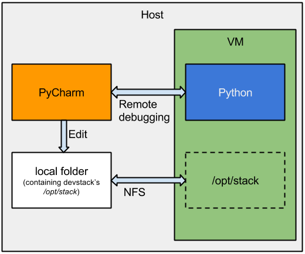

Up until now, my OpenStack development setup looked like this:
- devstack running in a VM,
- developing using tmux & vim over SSH.
Since I was hearing good things about PyCharm, I decided to give it a try. The idea of the setup is as follows:
- devstack running in a VM,
- developing using PyCharm running locally.
To achieve this, I used the concept of shared/synced folders. Development files are kept on the host machine, where I can use an IDE such as PyCharm for development, but are also be mounted in my devstack VM via NFS. In fact, the entire Devstack's /opt/stack directory is kept on the host machine. For easy setup, I used Vagrant 1.3.5 and Virtualbox 4.3.2.

With the help of blog posts by Terri Yu, Anita Kuno and many helpful tips from John Herndon of HP, I came up with this Vagrantfile (download):
$script = <<SCRIPT
# download required packages
apt-get update
apt-get -y install git vim-gtk libxml2-dev libxslt1-dev libpq-dev python-pip libsqlite3-dev
apt-get -y build-dep python-mysqldb
pip install git-review tox
# download devstack
git clone git://git.openstack.org/openstack-dev/devstack
chown -R vagrant:vagrant devstack
# create minimal localrc
cat <<_LOCALRC > devstack/localrc
ADMIN_PASSWORD=password
MYSQL_PASSWORD=password
RABBIT_PASSWORD=password
SERVICE_PASSWORD=password
SERVICE_TOKEN=tokentoken
LOGFILE=stack.sh.log
LOGDAYS=1
# data must not be inside NFS share
# because devstack tries to chown directories
# and NFS doesn't allow it
DATA_DIR=/opt/data
_LOCALRC
SCRIPT
## Vagrant config
VAGRANTFILE_API_VERSION = "2"
Vagrant.configure(VAGRANTFILE_API_VERSION) do |config|
config.vm.box = "precise64"
config.vm.box_url = "http://files.vagrantup.com/precise64.box"
# Change memory of our VM to 2048MB
config.vm.provider :virtualbox do |vb|
vb.customize ["modifyvm", :id, "--memory", "2048"]
end
# Forward port for Horizon
config.vm.network :forwarded_port, guest: 80, host: 8080
# Private network IP, needed for NFS
config.vm.network :private_network, ip: "192.168.33.10"
# /opt/stack is synced with vagrant project dir over NFS
config.vm.synced_folder ".", "/opt/stack", nfs: true
config.vm.provision "shell", inline: $script
end
All you need to do to get a Devstack development environment with its /opt/stack kept on the host machine is copy this Vagrantfile into your directory of choice and run
vagrant up
Setting up PyCharm
This part is really easy, just follow the instructions at https://www.jetbrains.com/pycharm/webhelp/remote-debugging.html#5. Basically you just click a button that fills in your Vagrant config and voilà, you can run and debug projects on your devstack VM.
Lessons learned
I was warned about these by John Herndon, but I had to try them out myself to see why:
1. Devstack's DATA_DIR variable mustn't reside on the NFS share
Nova creates stuff in the data directory with root permissions and then tries to chown them, which fails on the NFS share.
2. NFS share must reside on a case-sensitive filesystem
Unit tests for some projects require python packages that have the same name, save for the case. In my case, the problematic packages were Crypto and crypto.